2023年北京市中考化学真题 原卷解析
2023年北京市初中学业水平考试
化学试卷
考生须知
1.木试卷共8页，共两部分，共39题，满分70分。考试时间70分钟。
2.在试卷和草稿纸上准确填写姓名、准考证号、考场号和座位号。
3.试题答案一律填涂或书写在答题卡上，在试卷上作答无效。
4.在答题卡上，选择题、画图题用2B铅笔作答，其他试题用黑色字迹签字笔作答。
5.考试结束，将本试卷、答题卡和草稿纸一并交回。
可能用到的相对原子质量：H1 C12 O16 Al27
第一部分
本部分共25题，每题1分，共25分。在每题列出的四个选项中，选出最符合题目要求的一项。
1. 空气成分中，体积分数最大的是（ ）
A. 氮气B. 二氧化碳C. 氧气D. 稀有气体
【答案】A
【解析】
【详解】空气的成分按体积计算，大约是：氮气占78%、氧气占21%、稀有气体占0.94%、二氧化碳占0.03%、其它气体和杂质占0.03%。
2. 各种元素在地壳里的含量(质量分数)如下图，其中含量最多的元素是

A. 铁B. 铝C. 硅D. 氧
【答案】D
【解析】
【详解】由图可知，各种元素在地壳里的含量前四位由多到少依次为氧、硅、铝、铁，因此含量最多的元素是氧，故选D。
我们要形成绿色生活方式，像保护眼睛一样保护自然和生态环境。回答3~5题。
3. 下列行为不符合“低碳”理念的是
A. 自备购物布袋B. 按需取餐不浪费
C. 减少使用一次性餐具D. 教室人空未关灯
【答案】D
【解析】
【详解】A、自备购物布袋，可以减少塑料制品的使用，减少白色污染，符合“低碳”理念，不符合题意；
B、按需取餐不浪费，可以节约资源，符合“低碳”理念，不符合题意；
C、减少使用一次性餐具，可以节约资源，符合“低碳”理念，不符合题意；
D、教室人空未关灯，会造成能源的浪费，不符合“低碳”理念，符合题意。
故选D。
4. 2023年3月1日《北京市节水条例》正式实施。下列做法不利于节水的是
A. 用淘米水浇花B. 水管跑冒滴漏及时维修
C. 选用节水龙头D. 洗手打香皂时不关水龙头
【答案】D
【解析】
【详解】A、用淘米水浇花，可以节约用水，故选项做法有利于节水；
B、水管跑冒滴漏及时维修，可以节约用水，故选项做法有利于节水；
C、选用节水龙头，可以节约用水，故选项做法有利于节水；
D、洗手打香皂时不关水龙头，浪费水资源，故选项做法不利于节水。
故选D。
5. 垃圾分类，利国利民。塑料瓶属于
A. 可回收物B. 其他垃圾C. 厨余垃圾D. 有害垃圾
【答案】A
【解析】
【详解】塑料瓶可回收再利用，属于可回收物。
故选A。
6. 下列物质的性质属于化学性质的是
A. 铁呈固态B. 铜呈紫红色C. 蔗糖易溶于水D. 碳酸易分解
【答案】D
【解析】
【详解】A、铁呈固态，状态不需要通过化学变化就能表现出来，属于物理性质；
B、铜呈紫红色，颜色不需要通过化学变化就能表现出来，属于物理性质；
C、蔗糖易溶于水，溶解性不需要通过化学变化就能表现出来，属于物理性质；
D、碳酸易分解，需要通过化学变化才能表现出来，属于化学性质。
故选D。
7. 下列实验操作不正确的是
A.
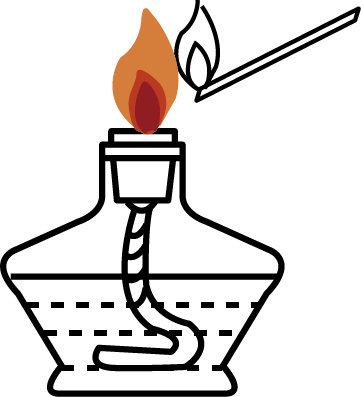
点燃酒精灯B. 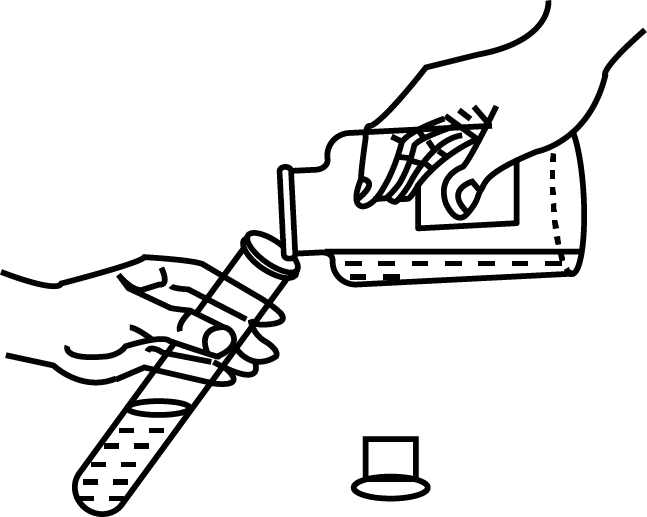
倾倒液体C.
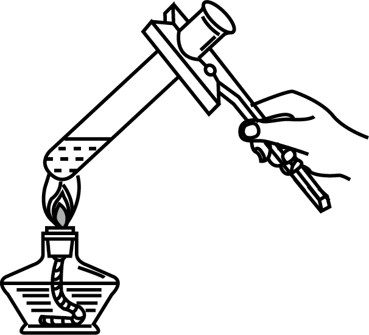
加热液体D. 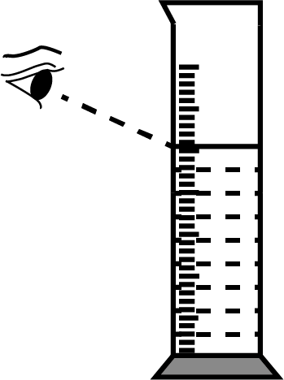
读取液体体积【答案】D
【解析】
【详解】A.
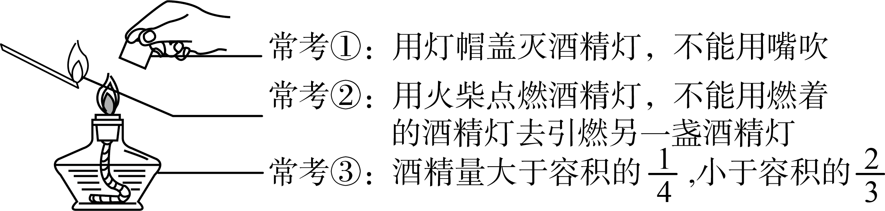
A正确，不符合题意；B.
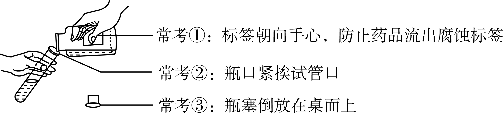
B正确，不符合题意；C.
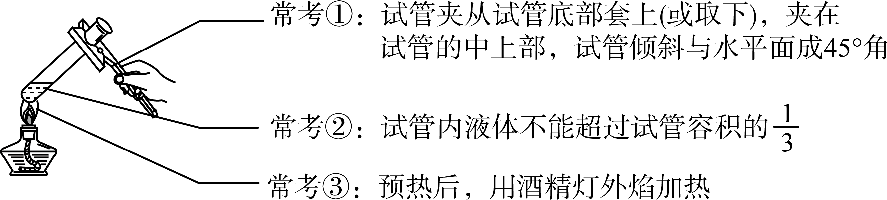
C正确，不符合题意；D.
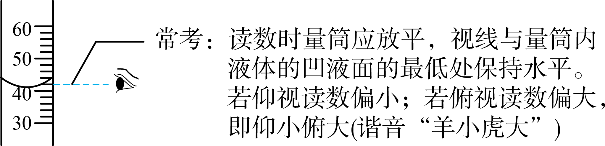
D错误，符合题意；故选D。
8. 化肥能提高农作物产量。下列物质能用作氮肥的是
A. B.
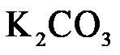
C. D. 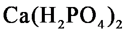
【答案】C
【解析】
【分析】氮肥是含有作物营养元素氮的化肥。
【详解】A.硫酸钾中不含氮元素，不是氮肥，不符合题意；
B.碳酸钾中不含氮元素，不是氮肥，不符合题意；
C.氯化铵中含氮元素，是氮肥，符合题意；
D.磷酸二氢钙中不含氮元素，不是氮肥，不符合题意；
故选C。
我国科学家在化学、化工领域做出了重大贡献。回答9~11题。
9. 我国近代化学先驱徐寿创造了部分元素的汉语名称。下列元素名称与符号不一致的是
A. 钠(Na)B. 钙(Ca)C. 镁(Zn)D. 锰(Mn)
【答案】C
【解析】
【详解】A、钠的元素符号表示为Na，故A正确，不符合题意；
B、钙的元素符号表示为Ca，故B正确，不符合题意；
C、镁的元素符号表示为Mg，锌的元素符号表示为Zn，故C错误，符合题意；
D、锰的元素符号表示为Mn，故D正确，不符合题意；
故选C。
10. 化工科学家侯德榜发明了“联合制碱法”生产纯碱。下列物质中，俗称纯碱的是
A.  B. C.
B. C.  D.
D.
【答案】A
【解析】
【详解】A、碳酸钠俗称纯碱、苏打，符合题意；
B、纯碱不是氯化钠的俗称，不符合题意；
C、氢氧化钠俗称烧碱、火碱、苛性钠，不符合题意；
D、碳酸氢钠俗称小苏打，不符合题意。
故选A。
11. 张青莲院士主持测定的锑、铈等元素的相对原子质量新值，被采用为国际新标准。铈元素在元素周期表中的信息如下图，其相对原子质量为

A. 58B. 82.1C. 140.1D. 198.1
【答案】C
【解析】
【详解】
相对原子质量为140.1，故选C。
12. 下列符号中，表示2个氮分子的是
A. 2N2B. 2NC. N2D. 2N2O
【答案】A
【解析】
【详解】分子用化学式来表示，在化学式前加上数字表示分子 个数，故2个氮分子表示为2N2，则A选项正确；
个数，故2个氮分子表示为2N2，则A选项正确；
故答案为A。
13. 下列标志应标识在固体试剂瓶上的是
A.  B.
B.  C.
C.  D.
D. 
【答案】D
【解析】
【分析】氢氧化钠具有强腐蚀性。
【详解】A、该标志为易燃气体标志，不符合题意；
B、该标志为自燃物品标志，不符合题意；
C、该标志为爆炸品标志，不符合题意；
D、该标志为腐蚀品标志，氢氧化钠有强腐蚀性，故该标志应标识在 NaOH 固体试剂瓶上，符合题意；
故选D。
14. 下列关于 的说法正确的是
的说法正确的是
A. 该反应属于置换反应
B. 该反应前后分子的个数不变
C. 生成的 与
与 的分子个数比为
的分子个数比为
D. 参加反应的 与生成的的质量比为
与生成的的质量比为
【答案】C
【解析】
【详解】A.置换反应是单质与化合物反应生成另外的单质和化合物的化学反应，是化学中四大基本反应类型之一，该反应不符合此形式，A错误，不符合题意；
B.反应前有2个过氧化氢分子，反应后有2个水分子和1个氧分子，共3个分子，化学反应前后分子个数改变，B错误，不符合题意；
C.由化学方程式可知生成的 H2O 与 O2 的分子个数比为 2:1，C正确，符合题意；
D.参加反应的 H2O2 与生成的 O2 的质量比= ，D错误，不符合题意；
，D错误，不符合题意；
故选C。
15. 下列物质均可用作燃料，在中充分燃烧时，不会产生 的是
的是
A.  B.
B.  C. 木炭D. CO
C. 木炭D. CO
【答案】B
【解析】
【分析】根据质量守恒定律，化学反应前后，元素的种类不变，在氧气中充分燃烧产生二氧化碳，说明该物质一定含有碳元素。
【详解】A、甲烷在氧气中充分燃烧生成二氧化碳和水，不符合题意；
B、根据质量守恒定律，化学反应前后，元素的种类不变，氨气中不含碳元素，所以在氧气中充分燃烧不会产生二氧化碳，符合题意；
C、木炭在氧气中充分燃烧生成二氧化碳，不符合题意；
D、一氧化碳在氧气中充分燃烧生成二氧化碳，不符合题意；
故选B。
16. 下列关于物质用途的说法不正确的是
A. 硫酸用于中和酸性废水B. 氧气用于气焊
C. 氮气用作食品保护气D. 干冰用作制冷剂
【答案】A
【解析】
【详解】A、硫酸呈酸性，能中和碱性废水，但不能用于中和酸性废水，故选项物质用途的说法不正确；
B、氧气具有助燃性，可用于气焊，故选项物质用途的说法正确；
C、氮气的化学性质不活泼，一般不与其它物质反应，可用作食品保护气，故选项物质用途的说法正确；
D、干冰升华时吸热，使周围的温度降低，可用作制冷剂，故选项物质用途的说法正确。
故选A。
17. 向分别盛有下列物质的点滴板孔穴中滴加足量稀硫酸，无明显现象的是
A.  B. FeC. 稀溶液D. 溶液
B. FeC. 稀溶液D. 溶液
【答案】C
【解析】
【详解】A、稀硫酸与氧化铁反应生成硫酸铁和水，可观察到固体逐渐溶解、溶液变为黄色，不符合题意；
B、稀硫酸与铁反应生成硫酸亚铁和氢气，可观察到固体逐渐溶解、溶液变为浅绿色、有气泡产生，不符合题意；
C、稀硫酸与氢氧化钠反应生成硫酸钠和水，该反应无明显现象，符合题意；
D、稀硫酸与碳酸钠溶液反应生成硫酸钠、二氧化碳和水，可观察到有气泡产生，不符合题意；
故选C。
18. 下列关于的实验室制取及检验的说法不正确的是
A. AB. BC. CD. D
【答案】C
【解析】
【详解】A、实验室常用大理石和稀盐酸反应制取二氧化碳，故A正确；
B、实验室常用大理石和稀盐酸反应制取二氧化碳，该反应为固液常温型，可选该装置作为发生装置，故B正确；
C、二氧化碳的密度比空气大，可用向上排空气法收集，故C错误；
D、二氧化碳能使澄清石灰水变浑浊，通常使用澄清石灰水检验二氧化碳，故D正确；
故选：C。
中国传统节日习俗积淀着博大精深的历史文化内涵。回答19~21题。
19. 正月十五闹花灯。下列制作花灯的材料中，属于金属材料的是
A. 宣纸B. 铁丝C. 棉线D. 竹条
【答案】B
【解析】
【详解】A、宣纸是由天然材料制成的，不符合题意；
B、铁丝属于金属材料，符合题意；
C、棉线属于天然材料，不符合题意；
D、竹条属于天然材料，不符合题意；
故选B。
20. 端午插艾。艾草中含有丰富的黄酮类物质，其中矢车菊黄素的化学式为 。下列关于的说法不正确的是
。下列关于的说法不正确的是
A. 由碳、氢、氧三种元素组成B. 相对分子质量为
C. 碳元素的质量分数最大D. 氢、氧元素的质量比为
【答案】B
【解析】
【详解】A、物质由元素组成，矢车菊黄素是由碳、氢、氧三种元素组成，故选项说法正确；
B、矢车菊黄素的相对分子质量为12×18+1×16+16×8=360，单位是“1”，不是“g” ，故选项说法不正确；
C、矢车菊黄素中碳、氢、氧元素的质量比为(12×18):(1×16):(16×8)=27:2:16，因此碳元素的质量分数最大，故选项说法正确；
D、矢车菊黄素中氢、氧元素的质量比为 (1×16):(16×8)=1:8，故选项说法正确。
故选B。
21. 重阳赏菊。菊花适合在弱酸性土壤中生长，下列土壤的pH最适合菊花生长的是
A. 6.3B. 8.5C. 8.9D. 9.2
【答案】A
【解析】
【详解】pH用来表示溶液酸性或碱性程度的数值，一般在0-14，其中0-7属酸性，7-14属碱性，7为中性。菊花适合在弱酸性土壤中生长，故最适合菊花生长的土壤pH值小于7。
故选：A。
时，按下表数据配制溶液。完成下面小题。
溶液序号 | ① | ② | ③ | ④ | 资料卡片 时，的溶解度为 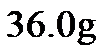 ；时，的溶解度为 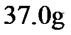 。 |
的质量/g | 6 | 16 | 26 | 36 |
水的质量/g | 100 | 100 | 100 | 100 |
22. 溶质与溶剂的质量比为的溶液是
A. ①B. ②C. ③D. ④
23. ①中溶质的质量分数约为
A B. C. D.
B. C. D.
24. 下列关于④的说法正确的是
A. 所得溶液为不饱和溶液
B. 向④中加水，溶液的质量变大
C. 将④加热至，溶质的质量变大
D. 向④中加固体，溶质的质量分数变大
【答案】22. B 23. A 24. B
【解析】
【22题详解】
A、20°C 时， NaCl 的溶解度为 36.0g ，溶液①中溶质与溶剂的质量比为6g：100g=3：50，不符合题意；
B、溶液②中溶质与溶剂的质量比为16g：100g=4：25，符合题意；
C、溶液③中溶质与溶剂的质量比为26g：100g=13：50，不符合题意；
D、溶液④中溶质与溶剂的质量比为36g：100g=9：25，不符合题意；
故选B；
【23题详解】
20°C 时， NaCl 的溶解度为 36.0g ，溶液①中溶的质量为6g，溶剂的质量为100g，故①中溶质的质量分数为：
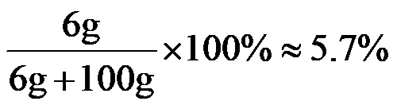
，故选A；【24题详解】
A、20°C 时， NaCl 的溶解度为 36.0g ，溶液④中溶质的质量为36g，溶剂的质量为100g，所得溶液恰好为20℃氯化钠的饱和溶液，故A说法错误；
B、向④中加水，溶剂增多，故溶液的质量变大，故B说法正确；
C、20°C时，NaCl的溶解度为36.0g，50°C时， NaCl 的溶解度为37.0g，将④加热至 50°C ，氯化钠的溶解度增大，④溶液变为不饱和溶液，但是溶液的组成不变，所以溶质的质量不变，故C说法错误；
D、④恰好为20℃氯化钠的饱和溶液，所以向④中加 NaCl 固体，不能再继续溶解氯化钠固体，故溶质的质量分数不变，故D说法错误；
故选B。
25. 用下图装置进行实验。通入前，白磷均不燃烧；通入后，甲中白磷不燃烧，乙中白磷燃烧。下列说法不正确的是
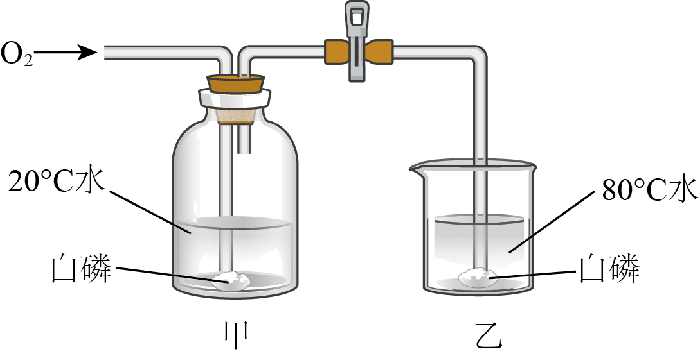
已知：白磷的着火点为；红磷的着火点为。
A. 该实验能验证可燃物燃烧需要与接触
B. 该实验能验证可燃物燃烧需要温度达到着火点
C. 若将甲中的白磷换成红磷，能验证可燃物燃烧需要温度达到着火点
D. 若将乙中的白磷换成红磷，能验证可燃物燃烧需要与接触
【答案】D
【解析】
【详解】A、乙中通入氧气前，白磷温度达到着火点，但没有与氧气接触，白磷不燃烧，通入氧气后，乙中白磷温度达到着火点，且与氧气接触，白磷燃烧，由此可验证可燃物燃烧需要与接触，故选项说法正确；
B、通入氧气后，甲中白磷与氧气接触，但温度没有达到着火点，白磷不燃烧，而乙中白磷与氧气接触，且温度达到着火点，白磷燃烧，由此可验证可燃物燃烧需要温度达到着火点，故选项说法正确；
C、若将甲中的白磷换成红磷，通入氧气后，甲中的红磷与氧气接触，但没有达到着火点，红磷不燃烧，而乙中白磷与氧气接触，且温度达到着火点，白磷燃烧，由此可验证可燃物燃烧需要温度达到着火点，故选项说法正确；
D、若将乙中的白磷换成红磷，通入氧气后，甲中白磷不燃烧，乙中的红磷也不燃烧，不能验证可燃物燃烧需要与接触，故选项说法不正确。
故选D。
第二部分
本部分共14题，共45分。
【生活现象解释】
26. 北京中山公园社稷坛中铺设的五色土，是我国土壤资源类型的缩影。
（1）白土含碳酸钙等白色物质。碳酸钙的化学式为_____。
（2）青土中
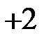
价铁元素的含量高于其他四种颜色的土。下列物质中，铁元素的化合价为价的是_____(填序号)。A. B. C.
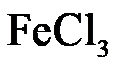
【答案】（1）CaCO3 （2）A
【解析】
【小问1详解】
碳酸钙中钙元素显示+2价，碳酸根显示-2价，化学式 CaCO3；
CaCO3；
【小问2详解】
根据在化合物中各元素正负化合价代数和为0；
A、FeO中氧元素显示-2价，则铁元素显+2价，符合题意；
B、Fe2O3中氧元素显-2价，则铁元素显+3价，不符合题意；
C、FeCl3中氯元素显-1价，则铁元素显+3价，不符合题意；
故选A。
27. 小组同学在实践活动中制作了如下图所示的简易净水器，并用其净化浑浊的河水。
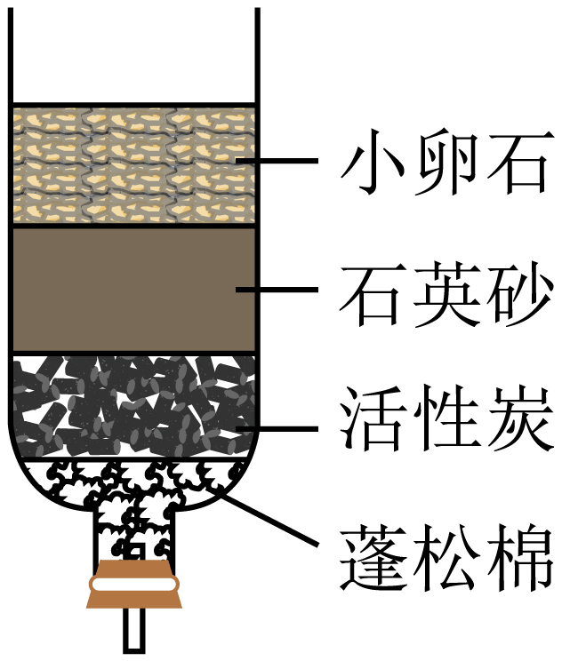
（1）活性炭的作用是_____。
（2）得到的水属于_____(填“混合物”或“纯净物”)。
【答案】（1）吸附色素和异味
（2）混合物
【解析】
【小问1详解】
活性炭具有吸附性，可以吸附水中的色素和异味；
【小问2详解】
经过简易净水器的过滤、吸附后，得到的水中仍含有可溶性杂质，属于混合物。
28. 化学与生活息息相关。
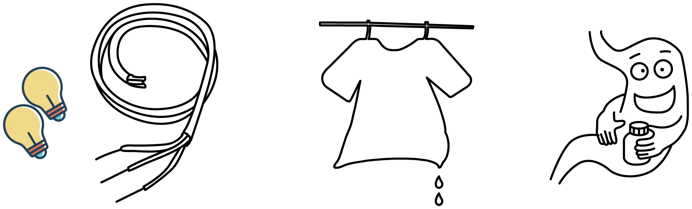
（1）铜可用于制作导线，主要利用了其延展性和_____。
（2）湿衣服晾晒后变干，用分子的观点解释其原因：_____。
（3）可用于治疗胃酸(主要成分为盐酸)过多症，原理为_____(用化学方程式表示)。
【答案】（1）导电性 （2）分子在不断地运动
（3）
【解析】
 小问1详解】
小问1详解】
铜可用于制作导线，主要利用了其延展性和导电性，故填：导电性；
【小问2详解】
湿衣服晾晒后变干，其原因是分子在不断地运动，水分子跑到空气中去了，故填：分子在不断地运动；
【小问3详解】
NaHCO3 可用于治疗胃酸(主要成分为盐酸)过多症，原理为碳酸氢钠与胃酸的主要成分盐酸反应生成氯化钠、二氧化碳和水，化学方程式为，故填：。
【科普阅读理解】
29. 阅读下面科普短文
保鲜膜通常有适度的透氧性和不透湿性，能调节被保鲜品周围和的含量，从而起到保鲜作用
目前市场上常见的保鲜膜主要是聚乙烯保鲜膜，它是以石海中提炼出的乙烯( )为主要原料制成的，不易降解，用从海藻中提取的海藻酸钠制成的保鲜膜具有良好的可降解性。在可降解测试中，海藻酸钠保鲜膜20天后基本降解完毕，而聚乙烯保鲜膜基本没有变化
)为主要原料制成的，不易降解，用从海藻中提取的海藻酸钠制成的保鲜膜具有良好的可降解性。在可降解测试中，海藻酸钠保鲜膜20天后基本降解完毕，而聚乙烯保鲜膜基本没有变化
科研人员以 环境下储藏的鲜切西瓜为样品，测试了海藻酸钠保鲜膜对西瓜品质的影响。研究其保鲜效果。其中，用海藻酸钠保鲜膜和聚乙烯保鲜膜分别包裹的西瓜，储藏期间微生物生长的情况如图(纵坐标数值越大，代表微生物数量越多)；用海藻酸钠保鲜膜包裹的
环境下储藏的鲜切西瓜为样品，测试了海藻酸钠保鲜膜对西瓜品质的影响。研究其保鲜效果。其中，用海藻酸钠保鲜膜和聚乙烯保鲜膜分别包裹的西瓜，储藏期间微生物生长的情况如图(纵坐标数值越大，代表微生物数量越多)；用海藻酸钠保鲜膜包裹的 西瓜每天减少的质量见表。
西瓜每天减少的质量见表。

表西瓜每天减少的质量
测定时间 | 第1天 | 第2天 | 第3天 | 第4天 | 第5天 | 第6天 |
质量/g | 3.5 | 2.7 | 3.1 | 2.4 | 2.5 | 1.5 |
目前，科研人员还在致力于海藻酸钠保鲜膜性能改进的研究，以推进其在食品保鲜中的实际应用。
(原文作者王琦琦、康顺等，有删改)
依据文章内容回答下列问题。
（1）中C、H原子的个数比为_____。
（2）海藻酸钠由钠、碳、氢、氧四种元素组成，其中属于金属元素的是_____。
（3）判断下列说法是否正确(填“对”或“错”)
①保鲜膜通常有适度的透氧性和不透湿性。_____
②海藻酸钠保鲜膜比聚乙烯保鲜膜易降解。_____
（4）表1中，“3.5”表示_____。
（5）微生物的滋生是引起水果腐烂变质的一个重要原因。图1数据可作为海藻酸钠保鲜膜的保鲜效果优于聚乙烯保鲜膜的证据之一，理由是_____。
【答案】（1）1:2 （2）钠##Na
（3） ①. 对 ②. 对
（4）用海藻酸钠保鲜膜包裹的 100g 西瓜第1天减少的质量
（5）相同条件下，储藏期间，用海藻酸钠保鲜膜包裹的西瓜比用聚乙烯保鲜膜包裹的西瓜微生物数量少
【解析】
【小问1详解】
由化学式可知，C2H4 中C、H原子的个数比为：2:4=1：2；
【小问2详解】
由“金”字旁可知，钠属于金属元素；
【小问3详解】
①保鲜膜通常有适度的透氧性和不透湿性，能调节被保鲜品周围 O2 和 H2O 的含量，从而起到保鲜作用，故填：对；
②由题干资料可知，在可降解测试中，海藻酸钠保鲜膜20天后基本降解完毕，而聚乙烯保鲜膜基本没有变化，故海藻酸钠保鲜膜比聚乙烯保鲜膜易降解，故填：对；
【小问4详解】
表1中，“3.5”表示用海藻酸钠保鲜膜包裹的 100g 西瓜第1天减少的质量；
【小问5详解】
由图1可知，相同条件下，储藏期间，用海藻酸钠保鲜膜包裹的西瓜比用聚乙烯保鲜膜包裹的西瓜微生物数量少，说明海藻酸钠保鲜膜的保鲜效果优于聚乙烯保鲜膜。
【生产实际分析】
30. 氧化亚铜(
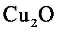
)可用于电镀工业。干法生产粉末的主要工艺流程如下：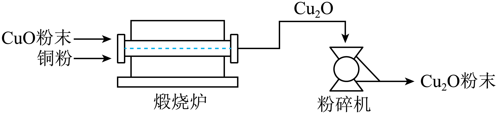
（1）粉碎机中，发生的变化属于_____(填“物理变化”或“化学变化”)。
（2）时，煅烧炉中发生化合反应，该反应的化学方程式为_____。
【答案】（1）物理变化
（2）
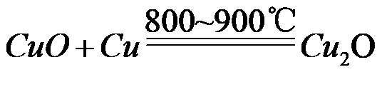
【解析】
【小问1详解】
粉碎过程中没有新物质生成，属于物理变化。
【小问2详解】
由图可知，煅烧炉中CuO和Cu在800~900℃反应生成Cu2O，反应的化学方程式为。
31. 氢能是绿色能源。储氢、释氢、用氢过程中涉及的部分物质转化如下：
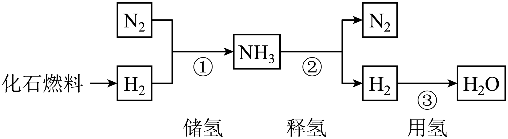
（1）化石燃料包括煤、石油和_____。
（2）①中，涉及到的物质属于单质的有_____。
（3）补全②的化学方程式：
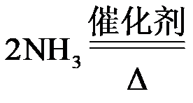
__________。（4）③中，
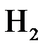
可通过燃烧提供能量，反应的化学方程式为_____。【答案】（1）天然气 （2）N2、H2
（3） ①. N2 ②. 3H2
（4）
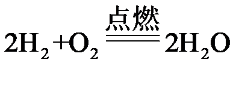
【解析】
【小问1详解】
化石燃料包括煤、石油和天然气；
【小问2详解】
①中，涉及到的物质为氮气、氢气和氨气，其中氮气和氢气均是由一种元素组成的纯净物，属于单质；
【小问3详解】
②中，氨气在催化剂和加热的条件下反应生成氮气和氢气，该反应的化学方程式为：
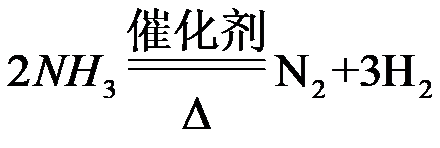
；【小问4详解】
③中，氢气与氧气点燃生成水，该反应的化学方程式为：。
【基本实验及其原理分析】
32. 下图是的制取和性质实验。
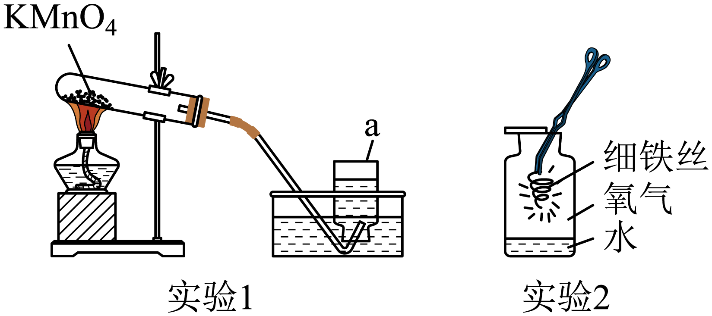
（1）实验1，仪器a的名称是_____，制取的化学方程式为_____。
（2）实验2，观察到铁丝剧烈燃烧、_____、生成黑色固体。
【答案】（1） ① 集气瓶 ②. 
（2）火星四射
【解析】
【小问1详解】
由图可知，仪器a为集气瓶；
制取氧气的反应为高锰酸钾受热分解生成锰酸钾、二氧化锰和氧气，该反应的化学方程式为：；
【小问2详解】
实验2中铁丝在氧气中剧烈燃烧、火星四射、生成黑色固体。
33. 从A或B中任选一个作答，若均作答，按A计分。
实验 | A．去除粗盐中难溶性杂质 | B．配制的溶液 |
仪器 | 已选 | 烧杯、玻璃棒、坩埚钳、酒精灯、漏斗、药匙、铁架台 | 托盘天平、烧杯、玻璃棒、胶头滴管、药匙、细口瓶 |
待选 | 蒸发皿 | 试管 | 酒精灯 | 量筒 |
操作 | 溶解、_____、蒸发 | 计算、_____、量取、溶解、装瓶贴标签 |
(1)从待选仪器中选出一种必需的仪器，在方框内画“√”，并补全操作。_____
(2)溶解过程中，用玻璃棒不断搅拌的目的是_____。
【答案】 ①. 过滤
②. 称量 ③. 蒸发皿（或量筒）（与所选对应） ④. 加快溶解速率
【解析】
【详解】（1）A、去除粗盐中难溶性杂质，操作步骤为：溶解、过滤、蒸发，还需要的仪器为蒸发皿；
B、配制 100g 6% 的 NaCl 溶液，操作步骤为：计算、称量、量取、溶解、装瓶贴标签，还需要的仪器为量筒；
（2）溶解过程中，用玻璃棒不断搅拌的目的是加快溶解速率。
34. 用下图电解水实验研究水的组成。
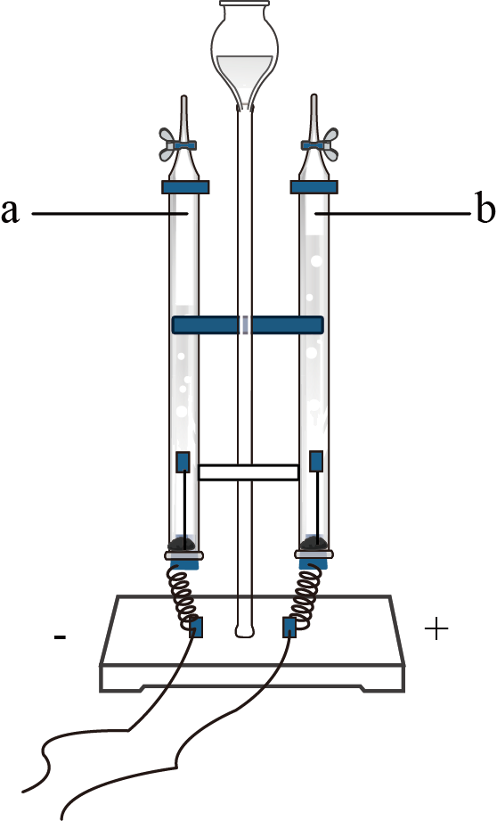
（1）经检验a管中产生，由此得出关于水的组成的推论是_____。
（2）用带火星木条检验b管中气体为的现象是_____。
【答案】（1）水中含氢元素 （2）带火星的木条复燃
【解析】
【小问1详解】
经检验a管中产生H2，电解水生成了氢气，氢气由氢元素组成，根据质量守恒定律，化学反应前后，元素的种类不变，说明水中含氢元素；
【小问2详解】
氧气具有助燃性，故用带火星木条检验b管中气体为 O2 的现象是：带火星的木条复燃。
35. 用下图实验研究的性质。
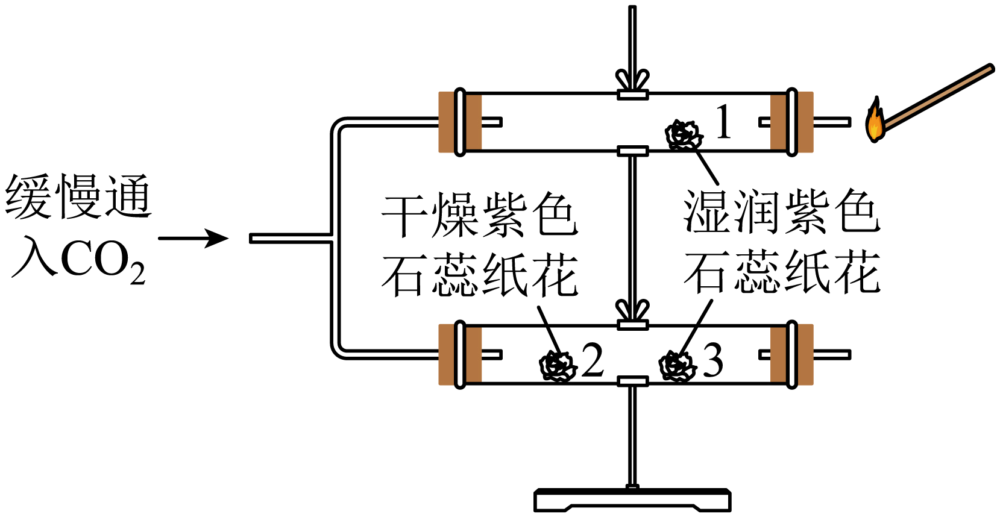
（1）可证明能与水反应的现象是_____，密度比空气的大的现象是_____。
（2）燃着的木条熄灭，由此可得出具有的性质是_____。
【答案】（1） ①. 2处干燥紫色石蕊纸花不变色，1、3处湿润紫色石蕊纸花变红色 ②. 3处湿润紫色石蕊纸花比1处湿润紫色石蕊纸花先变红色
（2）不能燃烧且不支持燃烧
【解析】
【小问1详解】
二氧化碳不能使紫色石蕊变色，二氧化碳与水反应生成碳酸，碳酸显酸性，可使紫色石蕊变红色，当2处干燥紫色石蕊纸花不变色，1、3处湿润紫色石蕊纸花变红色，说明二氧化碳能与水反应；
3处湿润紫色石蕊纸花比1处湿润紫色石蕊纸花先变红色，说明二氧化碳密度比空气大；
【小问2详解】
燃着的木条熄灭，由此可得出 CO2 具有不能燃烧且不支持燃烧的性质。
36. 用下图装置进行实验。
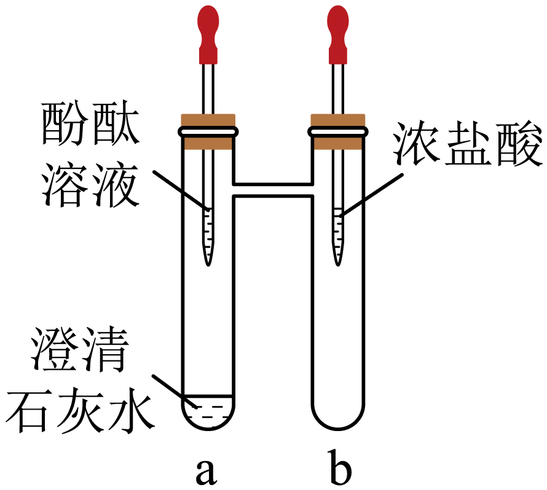
（1）将无色酚酞溶液滴入a中，溶液颜色变为_____；再将浓盐酸滴入b中，一段时间后，a中溶液褪色，说明
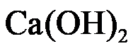
与发生了反应，化学方程式为_____。（2）该实验说明浓盐酸的性质有酸性和_____。
【答案】（1） ①. 红色 ②. Ca(OH)2+2HCl=CaCl2+2H2O
（2）挥发性
【解析】
【小问1详解】
无色酚酞溶液遇碱性溶液变红，将无色酚酞溶液滴入a中，由于澄清石灰水呈碱性，可观察到溶液颜色变为红色；再将浓盐酸滴入b中，一段时间后，a中溶液褪色，说明与发生了反应，即氢氧化钙与盐酸反应生成氯化钙和水，反应的化学方程式为Ca(OH)2+2HCl=CaCl2+2H2O，故填：红色；Ca(OH)2+2HCl=CaCl2+2H2O；
【小问2详解】
将浓盐酸滴入b中，一段时间后，a中溶液褪色，说明浓盐酸有酸性，浓盐酸能从b运动a中，还能说明浓盐酸具有挥发性，故填：挥发性。
37. 为验证铜、银、铁的金属活动性顺序，同学们设计了下图所示的6个实验。图中，“”表示将金属加入盐溶液。
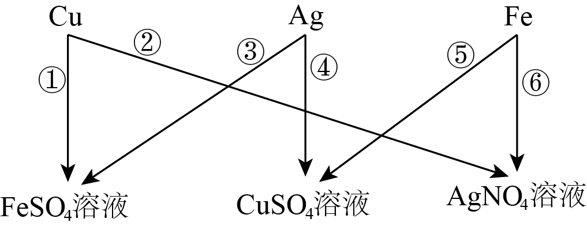
（1）⑤中，反应的化学方程式为_____。
（2）设计②的目的是_____。
（3）仅由④和⑥不能得出铜、银、铁的金属活动性顺序，理由是_____。
【答案】（1）
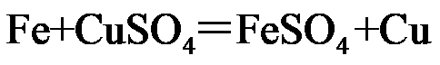
（2）铜的活泼性比银强；
（3）④可证明铜比银活泼，⑥可证明铁比银活泼，但无法确定铁和铜的活泼性强弱（合理即可）
【解析】
【小问1详解】
⑤是铁加入硫酸铜溶液中反应生成硫酸亚铁和铜，化学方程式为：
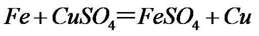
，故填：；【小问2详解】
②是将铜加入硝酸银溶液中，可探究铜的活泼性比银强，故填：铜的活泼性比银强；
【小问3详解】
④是将银加入硫酸铜溶液中，无明显变化，可证明铜比银活泼，⑥是铁加入硝酸银溶液中，观察到铁丝表面有银白色物质析出，可证明铁比银活泼，但无法确定铁和铜的活泼性强弱，故填：④可证明铜比银活泼，⑥可证明铁比银活泼，但无法确定铁和铜的活泼性强弱。（合理即可）
【科学探究】
38. 下图是一个趣味变色实验，同学们对混合后溶液变色时间的影响因素进行探究。
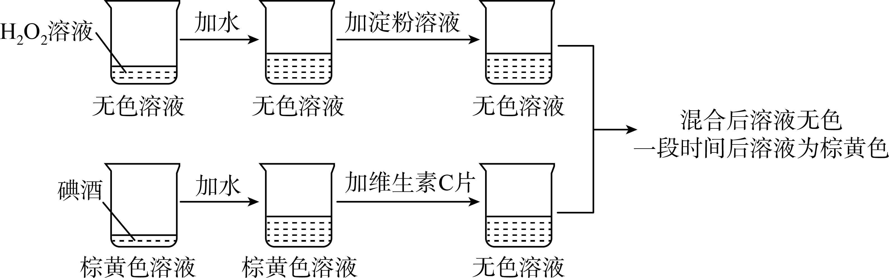
资料：碘酒为碘()的乙醇溶液；淀粉遇变蓝，在本实验中作为指示剂，指示是否存在。
【进行实验】向烧杯A中加入一定体积的
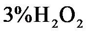
溶液、水和淀粉溶液。向烧杯B中加入一定体积的碘酒、水和2粒维生素C片，将两只烧杯中的溶液混合，记录混合后溶液由无色变为蓝色的时间。
序号 | 烧杯A | 烧杯B | 变色时间 |
溶液体积 | 溶液总体积 | 碘酒体积 | 溶液总体积 |
① | 10 | 32 | 2 | 25 | 595 |
② | 10 | 32 | 5 | 25 | 193 |
③ | 10 | 32 | 10 | 25 | 39 |
④ | 5 | 32 | 5 | 25 | 399 |
⑤ | 20 | 32 | 5 | 25 | 78 |
说明：本实验中，溶液总体积可看作是各液体的体积之和
【解释与结论】
（1）溶液中，溶质是_____；
（2）①②③的目的是_____。
（3）由②④⑤可以得到的结论是_____。
（4）①中，若将碘酒体积改为，则混合后溶液变色时间_____(填“ ”或“
”或“ ”或“
”或“ ”)。
”)。
【继续实验】
（5）补做实验证明了维生素C用量对混合后溶液变色时间也有影响。实验方案：向烧杯A中加入
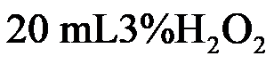
溶液、水、淀粉溶液，_____。（6）同学们进一步证明了与维生素C能发生反应，实验是向烧杯中依次加入碘酒、水、淀粉溶液，再加入维生素C片，实验过程中观察到_____。
【答案】（1）过氧化氢##H2O2
（2）探究碘酒体积对混合后溶液变色时间的影响
（3）相同条件下，过氧化氢溶液体积越大，变色时间越短 （4）＞
（5）向烧杯B中加入5mL的 2% 碘酒、4粒维生素C片，加入一定体积的水，使溶液总体积为25mL，将两只烧杯中的溶液混合，记录混合后溶液由无色变为蓝色的时间，与实验⑤对比
（6）溶液由棕黄色变为蓝色，变为无色
【解析】
【小问1详解】
过氧化氢溶液中，溶质是过氧化氢；
【小问2详解】
实验①②③中，碘酒体积不同，其他因素均相同，故目的是：探究碘酒体积对混合后溶液变色时间的影响；
【小问3详解】
实验②④⑤中过氧化氢溶液体积不同，其他因素均相同，且过氧化氢溶液体积越大，变色时间越短，说明相同条件下，过氧化氢溶液体积越大，变色时间越短；
【小问4详解】
由实验①②③可知，相同条件下，碘酒体积越大，变色时间越短，故①中，若将碘酒体积改为 1mL ，则混合后溶液变色时间＞595s；
【小问5详解】
补做实验证明维生素C用量对混合后溶液变色时间也有影响，则变量是维生素C用量，其他因素均相同，烧杯A中加入 20 mL3%H2O2 溶液、 10mL 水、 2mL 1% 淀粉溶液，故是与实验⑤对比，故向烧杯B中加入5mL的 2% 碘酒、4粒维生素C片，加入一定体积的水，使溶液总体积为25mL，将两只烧杯中的溶液混合，记录混合后溶液由无色变为蓝色的时间，与实验⑤对比。
【小问6详解】
向烧杯中依次加入碘酒、水，溶液变为棕黄色，再加入淀粉溶液，淀粉遇碘变蓝，故溶液变为蓝色，再加入维生素C片，维生素C能与碘反应，故最后溶液变为无色，故观察到溶液由棕黄色变为蓝色，再变为无色。
【实际应用定量计算】
39. 纳米铝冰作为火箭固体推进剂具有广阔的应用前景。以上时，发生的主要反应为
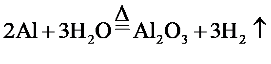
。该反应中，若有发生反应计算参加反应的的质量(写出计算过程及结果)。【答案】解：设参加反应的 H2O 的质量为x
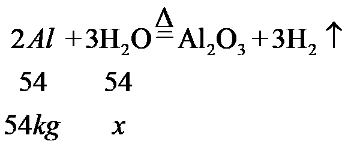
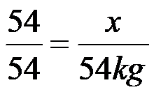
x=54kg
答：参加反应的水的质量为54kg【解析】
【详解】见答案。